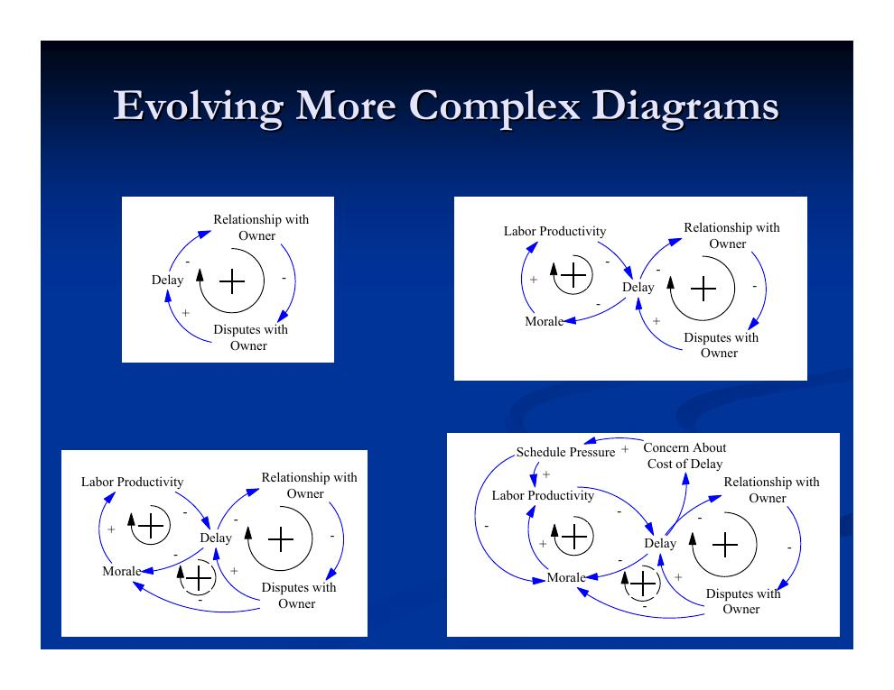
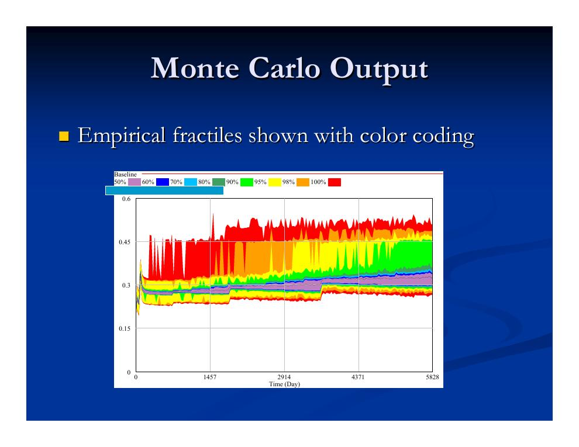
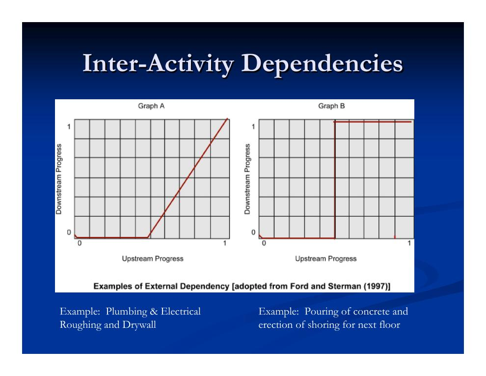
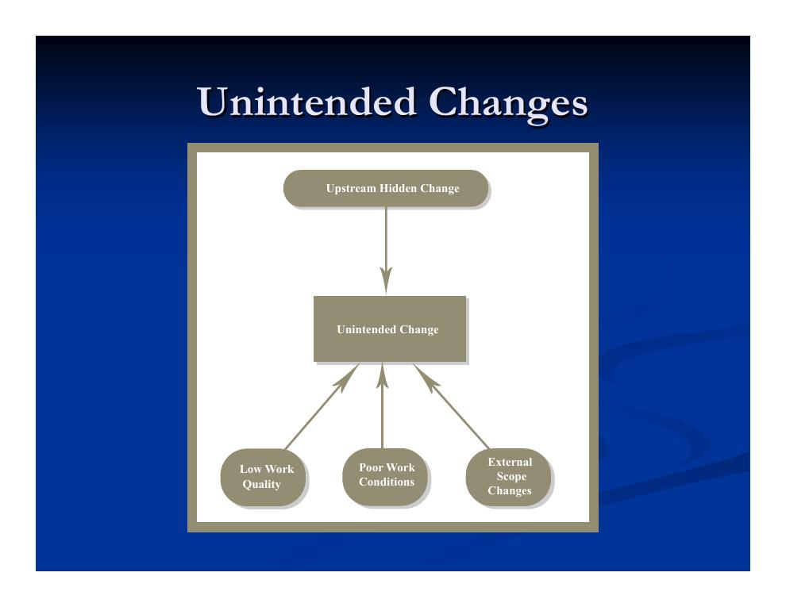
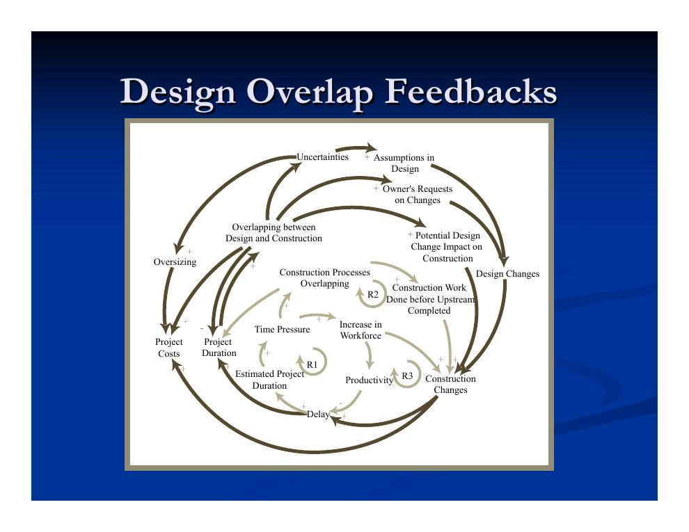
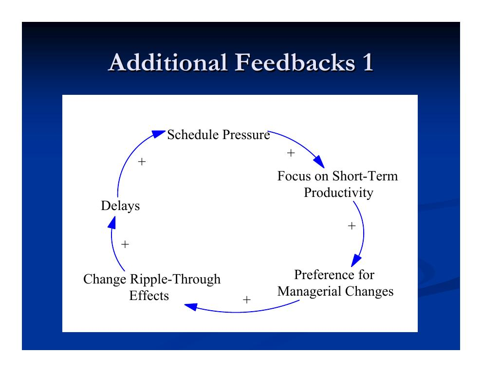
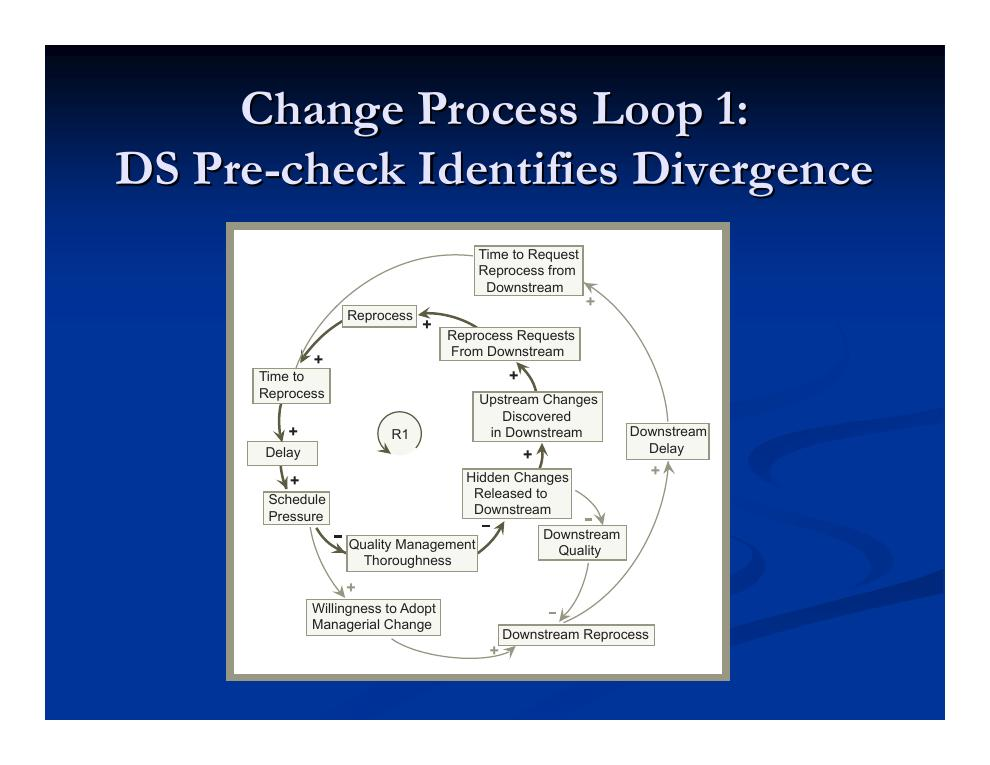
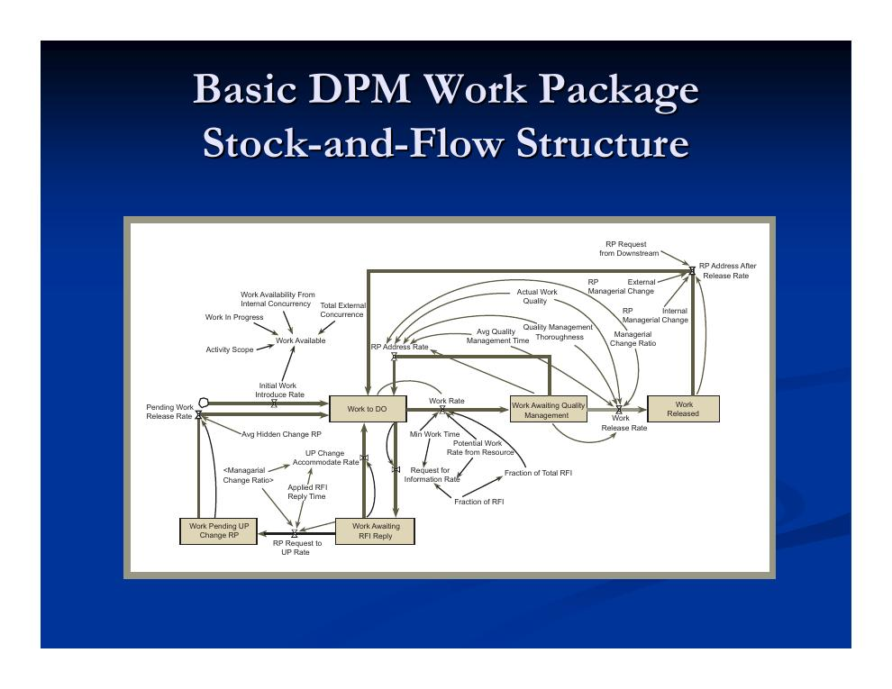

- Vom einfachen zum aussagekräftigen Kausaldiagramm
- Arbeiten mit System-Dynamics-Modellen: Szenarien und Unsicherheit
- Das DPM-Modell: Dynamik von Planung und Bauausführung
- Qualität, Nacharbeit und Spezifikationsänderungen
- Änderungsfortpflanzung und der Wert von Flexibilität
- Fast-Tracking und seine Rückkopplungen
- Der Änderungsprozess als Wirkungsschleife und Stock-and-Flow-Modell
- System Dynamics und Prozesssimulation im Vergleich
Vom einfachen zum aussagekräftigen Kausaldiagramm
Dieses Kapitel setzt die Einführung in Systemdenken und System Dynamics aus Kapitel 5.3 fort und wendet sie auf die Änderungsdynamik in Bauprojekten an. Ausgangspunkt bleibt die Kritik an den traditionellen Methoden: zu fragmentiert, zu restriktiv in den Annahmen, zu lokal bei den Folgen von Änderungen, zu zögerlich bei „weichen“ Faktoren und zu bereit, Nebenwirkungen zu ignorieren. Kausaldiagramme entstehen dabei nicht in einem Wurf, sondern evolutionär – sie werden schrittweise um Variablen und Schleifen erweitert, bis sie die beobachtete Dynamik erklären:

Bei der Kalibrierung solcher Modelle kann Statistik helfen, die Beziehungen zwischen den Variablen zu quantifizieren – aber Vorsicht: Es gibt typischerweise viele indirekte Effekte, die im Diagramm nicht dargestellt sind.
Arbeiten mit System-Dynamics-Modellen: Szenarien und Unsicherheit
Wie nutzt man ein fertiges System-Dynamics-Modell? Der typische erste Schritt ist ein Basisszenario („Baseline“) – nur ein Bezugspunkt, kein privilegierter Fall. Darauf bauen auf:
- Politik-Szenarioanalyse: „Policy-Parameter“ (z. B. Einstellungspolitik, Verhältnis von Spezifikationsänderungen zu Nacharbeit) werden variiert und die Ergebnisse verglichen.
- Robustheitsanalyse: Für verschiedene Politik-Parameter werden die Auswirkungen der wichtigsten Unsicherheiten untersucht.
- Sensitivitätsanalysen – für beides, und um die weitere Datenerhebung zu fokussieren.
- Analyse externer Rahmenbedingungen: Wie wirken unterschiedliche äußere Bedingungen auf das Projekt?
Unsicherheit wird meist über Sensitivitätsanalysen adressiert – Ziel ist zu sehen, wie stark die eigenen Entscheidungen von der Unsicherheit abhängen. Eine gründliche Analyse erfordert Monte-Carlo-Läufe. Dabei sind zwei Arten von Unsicherheit zu unterscheiden:
- Statische Unsicherheit
- Unsicherheit über den Wert eines Modellparameters: Zu Beginn des Simulationslaufs wird eine Verteilung für die Modellvariable vorgegeben.
- Dynamische Unsicherheit (stochastische Prozesse)
- Während des gesamten Laufs wird immer wieder neu gezogen – im Kern die numerische Lösung einer stochastischen Differentialgleichung (z. B. ein zufällig schwankender Ölpreis über die Projektlaufzeit).

Das DPM-Modell: Dynamik von Planung und Bauausführung
Wie verhalten sich System Dynamics und traditionelle Werkzeuge zueinander? Der übliche Weg ist eine (unbequeme) Koexistenz: System Dynamics erfasst die „dynamische“ Komplexität (Wechselwirkungen, Verzögerungen, Rückkopplungen), traditionelle Werkzeuge die „Detail“-Komplexität. Offene Fragen dabei: Wie werden die Ergebnisse zusammengeführt? Welchem Modell vertraut man? Am häufigsten dienen Kausaldiagramme der qualitativen Einsicht und traditionelle Werkzeuge den quantitativen Abwägungen. Der weitergehende Weg ist die Integration in einem Modell – das Beispiel der Vorlesung ist DPM:
- DPM (Dynamic Planning and Control Methodology)
- Ein bauspezifisches System-Dynamics-Modell von Park und Peña-Mora, das Komponenten netzplanbasierter Modelle einschließt und zur Analyse realer Projekte eingesetzt wurde. Besondere Merkmale: ein reicherer Satz von Abhängigkeiten (Verfeinerung interner/externer Verknüpfungen, Abhängigkeiten zwischen Planungs- und Bauvorgängen), die Unterscheidung von Spezifikationsänderung und Nacharbeit einschließlich Zyklen sowie die Charakterisierung von „Knock-on“-Effekten flussauf- und flussabwärts.
Die Abhängigkeiten zwischen Vorgängen bildet DPM nicht als starre Ende-Anfang-Beziehungen ab, sondern als Fortschrittsfunktionen: Wie viel Fortschritt des nachgelagerten Vorgangs ist bei gegebenem Fortschritt des vorgelagerten möglich?

Qualität, Nacharbeit und Spezifikationsänderungen
DPM operationalisiert Qualität als den Anteil der Arbeit, der den Spezifikationen entspricht. Entscheidend: Qualitätsprobleme werden oft erst spät entdeckt – die Verkürzung der Zeit bis zur Entdeckung ist der Schlüssel! Statisch betrachtet führt höhere Qualität zu höheren Kosten und längerer Fertigstellungsdauer; dynamisch betrachtet ist Qualität aber der Treiber für Nacharbeit und Spezifikationsänderungen – und damit für einen großen Teil der Projektdynamik.
Weicht die gebaute Leistung von den Spezifikationen ab, gibt es zwei grundsätzliche Reaktionen:
- Nacharbeit (Rework)
- Die Arbeit wird an die Spezifikation angepasst. In anderen Branchen verbreitet (z. B. die Neigung, Software periodisch neu zu schreiben), im Bauwesen begrenzt: Nacharbeit gilt als exorbitant teuer, und späte Entdeckung der Qualitätsprobleme kann sie faktisch ausschließen.
- Spezifikationsänderung (Specification Change)
- Die Spezifikation wird an die gebaute Leistung angepasst. Oberflächlich attraktiv, weil sie Änderungen auf der Baustelle zu begrenzen scheint. Zwei Typen: managementseitige Änderungen (einschließlich vom Bauherrn gewünschter) und unbeabsichtigte Änderungen.

Die Abwägung zwischen beiden Reaktionen:
| Reaktion | Kurzfristige Wirkung | Langfristige Wirkung |
|---|---|---|
| Nacharbeit | Mehr kurzfristige Arbeit – besonders, wenn die ursprüngliche Abweichung erst spät entdeckt wurde | Begrenzt das Ausmaß der Auswirkungen |
| Spezifikationsänderung | Weniger kurzfristige Arbeit | Kann viele „Nebenwirkungen“ auslösen, wenn sich die Änderung in andere Teile der Spezifikation fortpflanzt |
Änderungsfortpflanzung und der Wert von Flexibilität
Wie weit sich eine scheinbar lokale Änderung fortpflanzen kann, zeigt ein Beispiel aus der Praxis: Widersprüchliche Zeichnungen zur Führung von Lüftungskanälen erzwingen die Änderung eines Zeichnungssatzes, um die Kanäle aus einem anderen Lüftungsraum umzuleiten. In der Folge müssen Sanitär- und Elektroplanung ihre Trassen neu prüfen; die nun nötige größere Lüftungsanlage erfordert überarbeitete Werkstattzeichnungen, die Überprüfung des Elektrosystems auf die höhere Last, die Neubetrachtung der Rohrleitungen zur Anlage und die Prüfung der Tragwerkslasten des Gebäudes. Die Verzögerungen können Kundenbeziehungen belasten, Ressourcen leerlaufen lassen, andere Planungsleistungen stören und den Druck weiter erhöhen.
Fast-Tracking und seine Rückkopplungen
Die Überlappung von Planung und Bauausführung (Fast-Tracking) sowie die Überlappung von Bauprozessen untereinander erzeugen ein dichtes Geflecht von Rückkopplungen, das DPM explizit abbildet:

Hinzu kommen weitere Rückkopplungen des Änderungsgeschehens – etwa über die Wahl des Änderungswegs und über die Aufsicht:

Eine verwandte Schleife läuft über die Bauleitung: Verzug erhöht die Arbeitslast der Aufsicht („Supervisor Work Level“) und deren Ermüdung; damit steigen die Wahrscheinlichkeit, eine Abweichung zwischen Spezifikation und Bauausführung zu übersehen, und die Zeit bis zu ihrer Entdeckung – was die Terminauswirkungen von Änderungen weiter verschärft.
Der Änderungsprozess als Wirkungsschleife und Stock-and-Flow-Modell
Den Kern von DPM bildet der Änderungsprozess zwischen einem vorgelagerten („Upstream“, UP) und einem nachgelagerten („Downstream“, DS) Gewerk. Die Vorlesung unterscheidet drei Varianten derselben Grundschleife:
- Schleife 1: Eine Vorprüfung im nachgelagerten Gewerk entdeckt die Abweichung, bevor dort gearbeitet wird.
- Schleife 2: Die Abweichung wird erst während der Arbeit im nachgelagerten Gewerk entdeckt – zusätzlich zur Nachbearbeitung im vorgelagerten Gewerk fällt auch im nachgelagerten Nacharbeit an.
- Schleife 3: Statt Nachbearbeitung wird eine Spezifikationsänderung übernommen – der kurzfristige Aufwand sinkt, aber verdeckte Änderungen wandern weiter nach unten.

Für die Simulation wird diese Schleifenstruktur je Arbeitspaket in ein Stock-and-Flow-Modell übersetzt:

Die DPM-Studien münden in drei Kernbotschaften:
System Dynamics und Prozesssimulation im Vergleich
Zum Abschluss stellt die Vorlesung System Dynamics der ereignisorientierten Prozesssimulation gegenüber:
| Prozesssimulation (ereignisorientiert) | System-Dynamics-Simulation |
|---|---|
| Arbeitet „bottom-up“: detaillierte Simulation der Vorgangsprozesse | Arbeitet „top-down“: versucht, das Gesamtsystem der wichtigsten Faktoren zu erfassen; modelliert typischerweise keine einzelnen Vorgänge und Ressourcen |
| Ziel sind emergente Statistiken und Zeitverhalten | Ziel ist emergentes Zeitverhalten |
| Untersucht meist einzelne Wechselwirkungskomponenten (kann aber das Gesamtprojekt modellieren) | Bezieht „weiche“ Faktoren ein – notfalls mit groben Schätzungen |
| Basiert auf ereignisorientierter Simulation (Discrete Event Simulation) | Basiert auf gewöhnlichen/stochastischen Differentialgleichungen (ODE/SDE) |
| Bildet „weiche“ Faktoren (Arbeitsmoral, Ermüdung …) in der Regel nicht ab | Versucht, Entscheidungsregeln zu erfassen |
| Modelliert in der Regel keine Entscheidungsregeln | Strebt Transparenz an: Das Modell soll institutionelles Wissen für das Projektlernen festhalten |
Bei der Bewertung von Modellen helfen vier grundsätzliche Unterscheidungen:
- Präzision vs. Genauigkeit – viele Nachkommastellen sind nicht dasselbe wie Nähe zur Wahrheit.
- Mächtigkeit der Modellierung vs. Aufwand, ein nützliches Modell zu erstellen.
- Allgemeine Modellierung vs. Modellierung für einen bestimmten Zweck.
- Modellieren zur Vorhersage vs. Modellieren zum Verständnis.